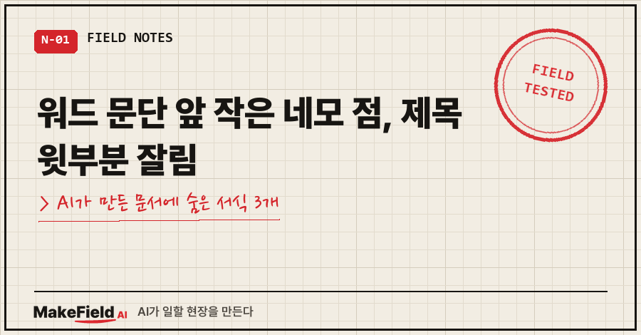
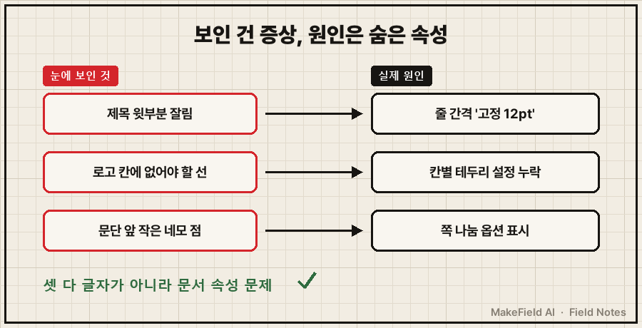
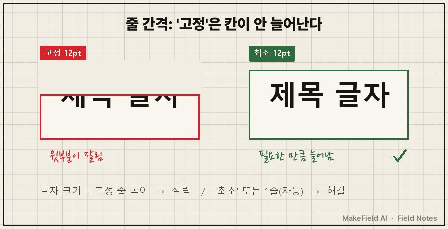
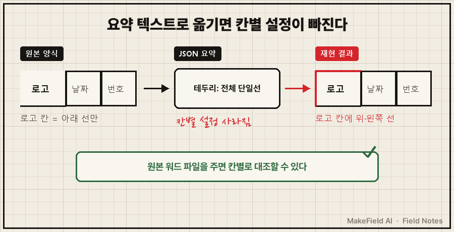

워드 문단 앞 네모 점이 문단마다 하나씩 붙어 있다면, 그건 오류가 아니라 '다음 단락과 함께' 같은 쪽 나눔 옵션이 걸려 있다는 화면 표시예요. 인쇄나 PDF에는 안 나오고, Ctrl+Shift+8(편집 기호 표시 끄기)로 화면에서 숨길 수 있습니다.
저는 이 네모 점을 포함해서, AI가 만든 워드 문서 한 장에서 숨은 서식 세 개를 연달아 만났어요.
제목 윗부분이 잘리고, 표 테두리가 엉뚱하게 그어지고, 마지막으로 문단마다 작은 네모 점.
셋 다 눈에 보이는 글자가 아니라 문서 안에 숨어 있는 속성 문제였습니다.
현장에서 자동화·제어 일을 15년 해 온 엔지니어예요. 도면이나 코드보다 더 손이 가는 게 의외로 보고서 양식 맞추기라서, 요즘은 그걸 AI한테 맡겨 보는 중이고요.
1. 어떻게 시켰길래 이런 일이 났나요?
양식을 '원본 워드 파일'이 아니라 'JSON 텍스트 요약'으로 넘긴 게 출발점이었어요.
머리글에 로고 표, 바닥글에 문서번호가 들어가는 흔한 사내 양식이 있었어요.
저는 이 양식의 여백·글꼴·표 구성을 JSON 텍스트로 정리해 두고, AI한테 "이걸로 워드 문서를 다시 만들어 줘"라고 했습니다.
AI는 파이썬(python-docx)으로 생성 스크립트를 짜고, 워드 파일을 만들고, PDF로 변환해서 "겹치거나 깨진 곳 없다"고 보고했어요.
그런데 열어 보니 뭔가 어색하더라고요.

2. 워드 제목 윗부분이 잘릴 때 — 줄 간격 '고정'을 의심하세요
글자 크기와 같은 값으로 줄 간격이 '고정'돼 있으면 글자 윗부분이 잘려 보여요. '최소'로 바꾸면 바로 풀립니다.
제가 처음 던진 말은 이거였어요.
양식이 좀 이상한데? 글 자체가 위에가 좀 짤려있다? 좀 자연스럽게 다시 해줄래?AI가 찾은 원인은 줄 간격이었습니다. 제목 글자가 12pt인데 줄 간격이 '고정 12pt'로 들어가 있었어요. 줄 높이가 글자 높이와 딱 같으니 글자 윗부분이 줄 밖으로 밀려 잘린 거죠.
워드에서 직접 고칠 때는 단락 설정에서 줄 간격을 '고정' 대신 '최소'로 바꾸면 돼요. 코드로 만든 문서라면 이 한 줄입니다(실제 스크립트에서 발췌).
if line: # '고정'이면 글자 윗부분 잘림 → '최소'로 적용
pf.line_spacing_rule = WD_LINE_SPACING.AT_LEAST
pf.line_spacing = Pt(line)제목은 아예 줄 간격을 1줄(자동)로 돌리고 아래 여백을 6pt 줬어요. 그다음 PDF로 다시 뽑아 보니 제목이 온전히 나왔습니다.

3. 표 테두리가 일부만 이상할 때 — 요약본엔 '칸별 설정'이 없어요
표 전체 테두리 한 줄만 적힌 요약으로는 칸마다 다른 테두리를 재현할 수 없어요.
두 번째는 제가 먼저 원인을 짚었습니다.
그리고 로고쪽은 아랫줄만 있고 윗줄과 왼쪽줄은 없는데 json이 이상하게 왔나봐?맞았어요. JSON에는 머리글 표 테두리가 single, 0.5pt, black (all + inside) 한 줄로만 적혀 있었어요. 원본 양식은 로고 칸만 위·왼쪽 선이 없는데, 그 칸별 설정이 요약 과정에서 통째로 빠진 거죠. AI는 받은 대로 전부 선을 그었을 뿐이고요.
고친 방법은 로고 칸에만 위·왼쪽 테두리를 '없음'으로 지정하는 거였어요. 워드에서는 그 칸만 선택하고 테두리 적용 대상을 '셀'로 바꿔 지우면 되고, 코드로는 이렇게 칸 단위로 넣었습니다(발췌).
tb = OxmlElement('w:tcBorders')
for e in ('top', 'left'):
el = OxmlElement(f'w:{e}'); el.set(qn('w:val'), 'nil'); tb.append(el)
tcPr.append(tb)여기서 AI가 한 말이 인상적이었어요. "JSON이 다른 칸의 세부 서식도 같은 식으로 빠뜨렸을 수 있습니다. 원본 Word 파일이 있으면 보내 주세요. 칸별로 대조해서 맞추겠습니다."
한 군데가 빠졌다면, 안 보이는 다른 곳도 빠졌을 수 있다는 거죠.
여러분도 양식을 AI한테 넘길 때 파일 대신 "이런 양식이야"라고 설명으로 주고 계시진 않나요?

4. 워드 문단 앞 네모 점은 뭔가요?
쪽 나눔 옵션(다음 단락과 함께 등)이 걸린 문단 왼쪽에 워드가 화면에만 보여 주는 표시예요. 인쇄·PDF에는 안 나옵니다.
양식을 고친 뒤 이걸로 몇 쪽짜리 보고서를 만들었는데, 이번엔 이게 보였어요.
앞에 네모칸 점 붙는건..조그만한 네모점.. 문단마다 하나씩 붙어있는데정체는 AI가 일부러 걸어 둔 옵션이었습니다. 제목만 쪽 끝에 홀로 떨어지거나 사진이 쪽 사이에서 잘리지 않게, 항목 제목부터 사진까지 문단마다 '다음 단락과 함께'(Keep with next)를 걸고 표 행에는 쪽 사이에서 갈라지지 않게 하는 설정을 넣었거든요. 네모 점은 그 옵션이 걸려 있다는 표시였던 거죠.
정리하면 이렇습니다.
| 하고 싶은 것 | 방법 | 주의 |
|---|---|---|
| 화면에서만 숨기기 | Ctrl+Shift+8 또는 홈 탭 ¶(편집 기호 표시) 끄기 | 인쇄·PDF는 원래 안 나옴 |
| 그래도 보이면 | 파일 → 옵션 → 표시 → '모든 서식 기호 표시' 해제 | — |
| 옵션 자체 빼기 | 문단 오른쪽 클릭 → 단락 → 줄 및 페이지 나누기 탭 → '다음 단락과 함께' 해제 | 제목이 쪽 끝에 홀로 떨어지는 문제가 다시 생김 |
저는 숨기는 쪽을 택했어요. 네모 점이 거슬린다고 옵션을 빼면, 원래 막으려던 쪽 나눔 문제가 되살아나니까요.
곁가지 하나. 이때 제가 "전에 네가 얘기해 줬는데?"라고 물었더니, AI는 "이전 대화 내용은 기억에 없지만"이라고 답하고 설명을 이어 갔어요. 같은 질문을 두 번 하게 되는 건 이런 걸 따로 적어 두지 않아서였더라고요..
5. 자주 묻는 질문
Q. 제목 잘림은 꼭 '최소'로만 고쳐야 하나요?
A. 줄 간격을 '1줄'처럼 자동 계열로 바꿔도 풀려요. 핵심은 '고정'을 글자 크기와 같거나 작게 두지 않는 거예요. 본문은 '최소', 제목은 1줄로 나눠 적용했습니다.
Q. AI한테 양식을 재현시킬 때 뭘 주는 게 제일 좋나요?
A. 요약 텍스트보다 원본 워드 파일이에요. 줄 간격 방식, 칸별 테두리, 쪽 나눔 옵션처럼 눈에 안 띄는 속성은 설명으로 옮기는 순간 먼저 빠집니다.
6. 그래서 순서를 바꿨어요
세 문제를 겪고 나서 AI한테 문서를 맡기는 순서를 이렇게 바꿨어요.
- 양식은 설명 말고 원본 파일로 준다
- 결과는 화면이 아니라 PDF로 변환해서 눈으로 본다 (화면 표시와 인쇄 결과가 다르다)
- 이상한 곳이 보이면 글자 말고 줄 간격·테두리·쪽 나눔 속성부터 의심한다
AI가 "깨진 곳 없다"고 한 첫 보고도 거짓말은 아니었어요. 받은 JSON대로는 정확했으니까요. 다만 JSON에 없는 건 AI도 몰랐습니다.
다음엔 AI가 만든 문서를 PDF로 뽑아 눈으로 검수할 때 제가 실제로 보는 순서를 정리해 볼게요.
AI한테 일을 맡기고 결과를 눈으로 검수하는 과정은 makefield.ai에서 더 보실 수 있습니다.
출처
- Microsoft 지원, Keep text together — 단락 → Line and Page Breaks 탭 → Pagination의 Keep with next / Keep lines together → https://support.microsoft.com/en-us/office/keep-text-together-af94e5b8-3a5a-4cb0-9c53-dea56b43d96d
태그: #워드네모점 #워드문단앞네모 #워드제목잘림 #워드줄간격 #워드표테두리 #다음단락과함께 #편집기호표시 #MSWord #워드오류해결 #pythondocx #AI문서작성 #문서양식 #보고서양식 #업무자동화 #MakeFieldAI